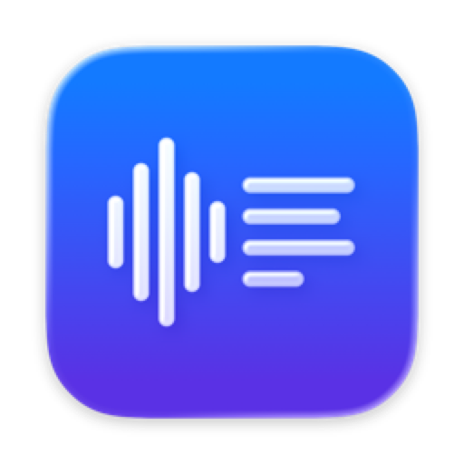
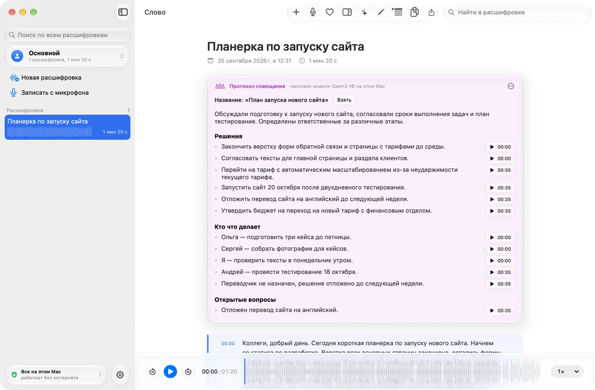

Слово
Речь в текст. Прямо на вашем Mac.
Расшифровывает совещания, лекции и интервью, пишет протоколы и конспекты. Записи не покидают компьютер — ни звук, ни текст.

Расшифровка
Час записи — примерно за восемь минут.
Слово распознает речь нейросетью Whisper прямо на вашем Mac. Перетащите файл в окно — текст появится с таймкодами у каждого абзаца, а щелчок по абзацу проиграет это место записи.
Текст не теряется
Модели распознавания иногда «зацикливаются» и молча выбрасывают куски записи. Слово проверяет каждый результат и, если нужно, пересчитывает запись заново — по кускам между паузами.
Запись с микрофона
Совещание, лекция или диктовка — запишите прямо в приложении. Когда остановите, запись сразу уйдет в расшифровку.
Поиск по всему
Ищет слово во всех расшифровках сразу, не обращая внимания на регистр и букву «ё».
Профили и папки
Работа, учеба, личное — у каждого профиля свои модель, язык, формат и папка.
Правка текста
Исправьте имя или термин — файлы рядом с записью перепишутся сами.
Обычные файлы
Расшифровка сохраняется рядом с записью и открывается чем угодно — даже без Слова.
Текст следует за звуком
Во время прослушивания текущая фраза подсвечивается и сама прокручивается. Скорость от 0,75× до 2×, перемотка на 15 секунд — с клавиатуры.
Саммари
Протокол готов, пока вы наливаете кофе.
Локальная языковая модель Qwen3 превращает расшифровку в документ. У каждого пункта таймкод: щелкните — и услышите, где об этом говорили. Итог пишется на языке записи.
Протокол совещания
Решения, кто что делает и к какому сроку, открытые вопросы.
Конспект лекции
Темы, понятия с определениями, задания и сроки.
Кратко о главном
Суть в двух-трех предложениях и главное пунктами.
Приватность
Ваши записи остаются вашими.
Слово сделано так, чтобы вашим записям не нужно было никому доверять. Нейросети работают на вашем компьютере, а приложению после загрузки моделей не нужен интернет.
Все считается на этом Mac
Речь распознается, а саммари пишется прямо на компьютере. Ни звук, ни текст никуда не отправляются.
Интернет нужен один раз
Только чтобы скачать модели с Hugging Face. Дальше — хоть в самолете.
Без учетных записей и аналитики
Нет серверов, счетчиков и регистрации. Приложение не знает, кто вы.
Удалить все — одной кнопкой
Список расшифровок, профили и модели стираются в окне «Приватность и безопасность». Файлы рядом с записями остаются вашими.
Установка
Три шага до первой расшифровки.
Скачайте
Откройте файл Slovo.dmg и перетащите Слово в папку «Программы».
Разрешите запуск
При первом запуске macOS покажет предупреждение — нажмите «Готово». Затем откройте «Системные настройки» → «Конфиденциальность и безопасность» и внизу нажмите «Все равно открыть».
Выберите модель
Приложение предложит скачать модель распознавания (около 650 МБ). Это нужно сделать один раз.
Почему предупреждение: Слово пока не прошло нотаризацию Apple — это платная программа для разработчиков. Разрешение на запуск дается один раз, дальше приложение открывается как обычно.
Вопросы и ответы
Какой Mac нужен?
Mac с процессором Apple Silicon (M1 и новее) и macOS 26 или новее. Для саммари желательно от 8 ГБ памяти.
Какие языки поддерживаются?
Интерфейс — русский и английский. Расшифровывать можно русскую и английскую речь; язык записи выбирается в настройках профиля.
Сколько места займут модели?
Модель «Точная» — около 650 МБ, «Быстрая» — около 80 МБ. Модель для саммари — 2,5 ГБ, ее можно не качать, если саммари не нужны. Удалить модели можно в любой момент.
Точно ли ничего не отправляется?
Да. Приложение выходит в сеть только чтобы скачать модели с Hugging Face — по вашему выбору. Проверить это можно отключив интернет: после загрузки моделей все работает так же.
Какие форматы записей подходят?
Звук и видео, которые читает macOS: m4a, mp3, wav, aiff, flac, mp4, mov, 3gp и другие. Ogg Vorbis и WebM система не читает.
Можно ли пользоваться на работе?
Да, лицензия разрешает использование в том числе в коммерческих целях. Перед записью разговора убедитесь, что это разрешено и участники согласны.
Как связаться с автором?
Пишите в Telegram @iamartempn — туда же вопросы, ошибки и предложения.
Почему бесплатно?
Потому что так задумано. Если приложение экономит вам время, его можно поддержать пожертвованием — но это добровольно, и никаких ограничений без него нет.
Попробуйте Слово.
Бесплатно. Без регистрации. Без интернета.
Вопросы и поддержка — в Telegram @iamartempn